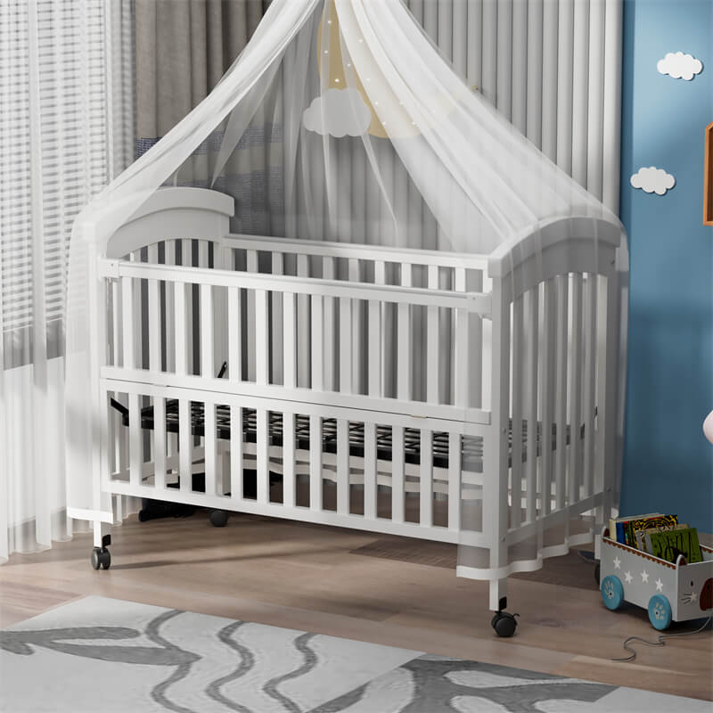

النوم والسلامة
النوم الآمن: تجهيز سرير الرضيع
خطوات بسيطة لتجهيز مكان النوم وتقليل المخاطر، في الليل والقيلولة.
من الولادة إلى 12 شهرًا
لم يُراجع طبيًا بعدتحقق تحريري:
قراءة المقاليقدم موقع عالم رعاية الأطفال الرضع دليلًا عمليًا لمساعدة الأمهات على متابعة نمو الرضيع، تنظيم نومه، وفهم أسباب البكاء، مع أدوات تفاعلية تسهّل رعاية الطفل منذ الولادة.
تحققي من دفتر التلقيح والمواعيد مع المركز الصحي
تتبعي نمو طفلك ومقارنته بالمعدلات الطبيعية
نظمي ملاحظاتك وتعرّفي على علامات طلب المساعدة
أنشئي روتيناً يومياً مناسباً لعمر طفلك
تأكدي دائمًا من نوم طفلك على ظهره لتقليل خطر متلازمة موت الرضع المفاجئ. هذه الوضعية هي الأكثر أمانًا خلال السنة الأولى.

خطوات بسيطة لتجهيز مكان النوم وتقليل المخاطر، في الليل والقيلولة.
من الولادة إلى 12 شهرًا
لم يُراجع طبيًا بعدتحقق تحريري:
قراءة المقال
علامات الاستعداد حول 6 أشهر، وخطوات التقديم مع استمرار الحليب.
من نحو 6 إلى 12 شهرًا
لم يُراجع طبيًا بعدتحقق تحريري:
قراءة المقال
ترتيب المستلزمات، اختبار الماء، ودعم الطفل طوال الاستحمام.
من الولادة إلى 12 شهرًا
لم يُراجع طبيًا بعدتحقق تحريري:
قراءة المقال